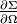
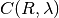
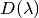
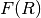
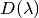
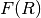

ISIS SANS Reduction Back-end¶
What is calculated in a SANS reduction?¶
This section gives a summary of what is calculated during the ISIS SANS reduction without going into implementation details. This is done in some sections below.
The starting point is equation 5 in the article by Richard Heenan et al, J. Appl. Cryst. (1997), pages 1140-1147. The coherent macroscopic cross-section is calculated at ISIS using :
This equation is aiming to do the best job at returning from the measured SANS
data the quantity of interest, the cross-section, ,
which is an absolute scattering probability, in units of . The
factor in the equation above fine tunes the cross-section to give the correct
value (usually based on a fit to scattering from a standard polymer sample).
The value of varies with the instrument set up, and with how the
units and normalisation for the other terms are chosen. 
are the observed counts at radius vector  from the diffractometer axis
and wavelength
from the diffractometer axis
and wavelength  . is the volume of the sample.
is an incident monitor spectrum.  contains
the relative efficiency of the main detector compared to the incident monitor.
is initially determined experimentally, but later subjected
to empirical adjustments. In reality the detector efficiencies implied in
are also pixel dependent. This variation is in part
accounted for by , which is called the flat cell or flood source
calibration file. is also determined experimentally, and aims to
contain information about the relative efficiency of individual detector pixels.
It is normalised to values close to 1 in order not to change the overall scaling
of the equation. The experimental flood source data are divided by detector pixel
solid angles at their measurement set up to give .
Detector pixel solid angles are calculated for the instrument geometry at the
time of the SANS experiment. optionally takes into account
any corrections that cannot be described as only pixel dependent or only
wavelength dependent. One such example is for the angle dependence of
transmissions, SANSWideAngleCorrection.
is the transmission, which measures the ratio of neutron counts after the sample,
divided by the neutron counts before the sample. is calculated
from a “transmission run” and a “direct run”. There are at least three ways to
measure transmission: using a monitor that drops in after the sample position,
a monitor on the main beam stop or by attenuating the beam, removing the beam stop,
and using the main detector itself. In all cases counts on the “transmission detector”
with a sample in the beam are divided by those for an empty (or “direct”) beam.
In order to allow for different exposures or changes in moderator spectrum,
each transmission spectrum is also first normalised to an incident beam monitor spectrum.
The sample transmission and direct beam transmissions must of course be acquired
with the same beam line set up, and ideally around the same time in case of any
electronic or performance drift.
. is the volume of the sample.
is an incident monitor spectrum.  contains
the relative efficiency of the main detector compared to the incident monitor.
is initially determined experimentally, but later subjected
to empirical adjustments. In reality the detector efficiencies implied in
are also pixel dependent. This variation is in part
accounted for by , which is called the flat cell or flood source
calibration file. is also determined experimentally, and aims to
contain information about the relative efficiency of individual detector pixels.
It is normalised to values close to 1 in order not to change the overall scaling
of the equation. The experimental flood source data are divided by detector pixel
solid angles at their measurement set up to give .
Detector pixel solid angles are calculated for the instrument geometry at the
time of the SANS experiment. optionally takes into account
any corrections that cannot be described as only pixel dependent or only
wavelength dependent. One such example is for the angle dependence of
transmissions, SANSWideAngleCorrection.
is the transmission, which measures the ratio of neutron counts after the sample,
divided by the neutron counts before the sample. is calculated
from a “transmission run” and a “direct run”. There are at least three ways to
measure transmission: using a monitor that drops in after the sample position,
a monitor on the main beam stop or by attenuating the beam, removing the beam stop,
and using the main detector itself. In all cases counts on the “transmission detector”
with a sample in the beam are divided by those for an empty (or “direct”) beam.
In order to allow for different exposures or changes in moderator spectrum,
each transmission spectrum is also first normalised to an incident beam monitor spectrum.
The sample transmission and direct beam transmissions must of course be acquired
with the same beam line set up, and ideally around the same time in case of any
electronic or performance drift.
Also, note that a SANS experiment frequently involves measurements of the sample (Sample) material of interest contained inside a can (Can) or dissolved in a solvent inside a cell. Separate SANS and transmission measurements must be made for the can or for the pure solvent in a cell. For convenience this is always referred to as the Can run. (Though for say a solid sample with no can, the Can run may actually be simply an empty beam run.) The full data reduction is performed separately for Sample and then the Can, before subtracting the Can cross-section from the Sample plus Can cross-section, to obtain the cross-section for the Sample alone. (In practise there can be some excluded volume and other annoying effects where hydrogenous solvents are involved.)
General¶
Introduction and Motivation¶
The ISIS SANS v2 reduction back-end is a more modern and updated version of the original ISIS SANS reduction back-end which has been in use for almost 10 years.
Users who sets up a SANS reduction work-flow have control over a vast number of settings (>50) in addition to settings which are extracted from the provided workspaces and instrument specific settings. The total number of settings which define a SANS data reduction can be close to 100.
The previous implementation of the SANS data reduction stored the settings non-centrally and allowed the overall state to be mutable. This made it extremely hard to reason about the overall state of a data reduction and lead to unnecessary data reloads, degrading the overall performance. Also, the direct coupling of the state to the algorithms does not allow for extending them to other facilities.
The new implementation of the SANS data reduction aims to avoid these pitfalls and focusses on robustness, maintainability and performance. The main way to achieve this is to use a simple state object which stores the reduction-relevant information centrally.
SANSState¶
Motivation¶
As mentioned above, the amount of parameters that can be set by the user makes the SANS reduction one of the more complex ones in the Mantid ecosystem. Previous implementations stored the settings non-centrally which led to many difficult-to-find bugs and a lot of uncertainty about the current settings of the reduction as they were changed during the reduction.
This has been the main bottleneck of the previous reduction framework. To overcome this, the new implementation of the SANS data reduction uses a simple state object which stores the reduction-relevant information centrally. This SANSState approach is the corner stone of the new design.
The SANSState is:
self-validating
- immutable (currently this is not enforced on the object itself, but should be added in the future.
The reduction code is written however such that it does not make sense to mutate the state while a reduction is running.)
typed
serializable
easy to reason about
modular (sub-states for units of work)
This approach allows us to identify issues with the settings before a lengthy data reduction has been started.
Components¶
This section describes the essential components of the state mechanism. These include the states themselves, the parameters in a state and the state construction.
state_base.py¶
The state_base.py module contains the essential ingredients for defining a state object. These are the StateBase class which allows for serialization and a set of TypedParameter.
The StateBase’s property_manager property is responsible for serialization. Due to the nature of the PropertyManagerProperty of algorithms it serializes the state object to a Python dictionary and receives a Mantid PropertyManager object. This asymmetry is unfortunate, but mirrors the asymmetry of the algorithm inputs.
States which want to fulfill the StateBase contract must override the validate method. This method is used to ensure internal consistency of the TypedParameters on the state. It is important to have comprehensive and tight checks here.
The entries on the state objects are all descriptors of type TypedParameter which allows for type checking, ensuring consistency early on. It is easy to build custom types. The current list of types are:
- StringParameter
- BoolParameter
- FloatParameter
- PositiveFloatParameter
- PositiveIntegerParameter
- DictParameter
- ClassTypeParameter
- FloatWithNoneParameter
- StringWithNoneParameter
- PositiveFloatWithNoneParameter
- FloatListParameter
- StringListParameter
- PositiveIntegerListParameter
- ClassTypeListParameter
Most of the typed parameters are self-descriptive. The ClassTypeParameter refers to the enum-like class definitions in enum.py. Note that if a parameter is not set by the state builder, then it will return None when it is queried. If it is a mandatory parameter on a state object, then this needs to be enforced in the validate method of the state.
Individual states¶
The overall state object is made of sub-state objects which carry all required information for a single reduction step or other unit of work. This ensures that all the sub-states are independent of each other carry all required information. Note that this also means that some data is stored redundantly, for example the binning for the wavelength conversion is stored in the state object used for monitor normalization and in the state object for the transmission calculation.
In the following sections we list the different parameters on the currently implemented states.
state.py¶
The State class is the overarching state which contains sub-states where each sub-state has a different responsibility (see below).
| Name | Comment | State type |
|---|---|---|
| data | info about runs to use (most important state) | StateData |
| move | info about the instrument component positions | StateMove |
| reduction | general reduction info | StateReductionMode |
| slice | info about event slicing (when applicable) | StateSliceEvent |
| mask | info about masking | StateMask |
| wavelength | info about wavelength conversion of the scatter data | StateWavelength |
| save | info about the save settings | StateSave |
| scale | info about the absolute scale and the sample volume | StateScale |
| adjustment | info about adjustment workspaces | StateAdjustment |
| convert_to_q | info about momentum transfer conversion | StateConvertToQ |
| compatibility | used when reducing in compatibility mode | StateCompatibility |
data.py¶
This is the most important state. Since the reduction framework has a data-driven approach it is not possible to build up most of the reduction without knowing what the actual data for the reduction will be.
| Name | Comment | Type | Optional? | Auto-generated? |
|---|---|---|---|---|
| sample_scatter | The sample scatter file path | StringParameter | N | N |
| sample_scatter_period | The period to use for the sample scatter | PositiveIntegerParameter | Y | N |
| sample_transmission | The sample transmission file path | StringParameter | Y | N |
| sample_transmission_period | The period to use for the sample transmission | PositiveIntegerParameter | Y | N |
| sample_direct | The sample direct file path | StringParameter | Y | N |
| sample_direct_period | The period to use for the sample direct | PositiveIntegerParameter | Y | N |
| can_scatter | The can scatter file path | StringParameter | Y | N |
| can_scatter_period | The period to use for the can scatter | PositiveIntegerParameter | Y | N |
| can_transmission | The can transmission file path | StringParameter | Y | N |
| can_transmission_period | The period to use for the can transmission | PositiveIntegerParameter | Y | N |
| can_direct | The can direct file path | StringParameter | Y | N |
| can_direct_period | The period to use for the can direct | PositiveIntegerParameter | Y | N |
| calibration | The path to the calibration file | StringParameter | Y | N |
| sample_scatter_run_number | Run number of the sample scatter file | PositiveIntegerParameter | Y | |
| sample_scatter_is_multi_period | If the sample scatter is multi-period | BoolParameter | Y | |
| instrument | Enum for the SANS instrument | ClassTypeParameter(SANSInstrument) | Y | |
| idf_file_path | Path to the IDF file | StringParameter | Y | |
| ipf_file_path | Path to the IPF file | StringParameter | Y |
Note that while some parameters are optional they might become mandatory if other optional parameters have been specified. Also note that some of the parameters on the state are auto-generated by the builder classes.
move.py¶
The move state defines how instruments are moved. This is highly individual to the different instruments. Therefore there is most likely going to be one state per instrument, sometimes even more when there should be different behaviour for different run numbers.
The fundamental class is StateMove which has the following parameters:
| Name | Comment | Type | Optional? | Auto-generated? | Default value |
|---|---|---|---|---|---|
| x_translation_correction | FloatParameter | Y | N | 0.0 | |
| y_translation_correction | FloatParameter | Y | N | 0.0 | |
| z_translation_correction | FloatParameter | Y | N | 0.0 | |
| rotation_correction | FloatParameter | Y | N | 0.0 | |
| side_correction | FloatParameter | Y | N | 0.0 | |
| radius_correction | FloatParameter | Y | N | 0.0 | |
| x_tilt_correction | FloatParameter | Y | N | 0.0 | |
| y_tilt_correction | FloatParameter | Y | N | 0.0 | |
| z_tilt_correction | FloatParameter | Y | N | 0.0 | |
| sample_centre_pos1 | FloatParameter | Y | N | 0.0 | |
| sample_centre_pos2 | FloatParameter | Y | N | 0.0 | |
| detector_name | StringWithNoneParameter | Y | |||
| detector_name_short | StringWithNoneParameter | Y |
If nothing is specified, then the detector positions and movements are assumed to be 0. Note that each instrument contains additional parameters on their individual state classes. When adding a new instrument, this will be most likely one of the main areas to add new code.
reduction_mode.py¶
The StateReductionMode class contains general settings about the reduction, e.g. if we are dealing with a merged reduction. It contains the following parameters:
| Name | Comment | Type | Optional? | Auto-generated? | Default value |
|---|---|---|---|---|---|
| reduction_mode | The type of reduction, i.e. LAB, HAB, merged or both | ClassTypeParameter(ReductionMode) | N | N | ISISReductionMode.LAB enum value |
| reduction_dimensionality | If 1D or 2D reduction | ClassTypeParameter(ReductionDimensionality) | N | N | ReductionDimensionality.OneDim enum value |
| merge_fit_mode | The fit mode for merging | ClassTypeParameter(FitModeForMerge) | Y | N | FitModeForMerge.NoFit enum value |
| merge_shift | The shift value for merging | FloatParameter | Y | N | 0.0 |
| merge_scale | The scale value for merging | FloatParameter | Y | N | 1.0 |
| merge_range_min | The min q value for merging | FloatWithNoneParameter | Y | N | None |
| merge_range_max | The max q value for merging | FloatWithNoneParameter | Y | N | None |
| detector_names | A dict from detector type to detector name | DictParameter | N | Y |
slice.py¶
The StateSliceEvent class is only relevant when we are dealing with event-type data and the user decides to perform an event-sliced reduction, i.e. one reduction per event slice.
| Name | Comment | Type | Optional? | Auto-generated? |
|---|---|---|---|---|
| start_time | A list of start times for event slices | FloatListParameter | Y | N |
| end_time | A list of stop times for event slices | FloatListParameter | Y | N |
Note that the validation ensures that the number of start_time and end_time entries is matched and that the end time is larger than the start time.
mask.py¶
The StateMask class holds information regarding time and pixel masking. It also contains two sub-states which contain detector-specific masking information. The StateMask contains the following parameters:
| Name | Comment | Type | Optional? | Auto-generated? |
|---|---|---|---|---|
| radius_min | The min radius of a circular mask on the detector | FloatParameter | Y | N |
| radius_max | The max radius of a circular mask on the detector | FloatParameter | Y | N |
| bin_mask_general_start | A list of start times for general bin masks | FloatListParameter | Y | N |
| bin_mask_general_stop | A list of stop times for general bin masks | FloatListParameter | Y | N |
| mask_files | A list of mask files | StringListParameter | Y | N |
| phi_min | The min angle of an angle mask | FloatParameter | Y | N |
| phi_max | The max angle of an angle mask | FloatParameter | Y | N |
| use_mask_phi_mirror | If the mirror slice should be used | BoolParameter | Y | N |
| beam_stop_arm_width | The width of the beam stop arm | PositiveFloatParameter | Y | N |
| beam_stop_arm_angle | The angle of the beam stop arm | FloatParameter | Y | N |
| beam_stop_arm_pos1 | The x position of the beam stop arm | FloatParameter | Y | N |
| beam_stop_arm_pos2 | The y position of the beam stop arm | FloatParameter | Y | N |
| clear | currently not used | BoolParameter | Y | N |
| clear_time | currently not used | BoolParameter | Y | N |
| detector | A dict of detector type to StateMaskDetector sub-states | DictParameter | N | Y |
| idf_path | The path to the IDF | StringParameter | N | Y |
Validation is applied to some of the entries.
The detector-specific settings are stored in the StateMaskDetector which contains the following parameters:
| Name | Comment | Type | Optional? | Auto-generated? |
|---|---|---|---|---|
| single_vertical_strip_mask | PositiveIntegerListParameter | Y | N | |
| range_vertical_strip_start | PositiveIntegerListParameter | Y | N | |
| range_vertical_strip_stop | PositiveIntegerListParameter | Y | N | |
| single_horizontal_strip_mask | PositiveIntegerListParameter | Y | N | |
| range_horizontal_strip_start | PositiveIntegerListParameter | Y | N | |
| range_horizontal_strip_stop | PositiveIntegerListParameter | Y | N | |
| block_horizontal_start | PositiveIntegerListParameter | Y | N | |
| block_horizontal_stop | PositiveIntegerListParameter | Y | N | |
| block_vertical_start | PositiveIntegerListParameter | Y | N | |
| block_vertical_stop | PositiveIntegerListParameter | Y | N | |
| block_cross_horizontal | PositiveIntegerListParameter | Y | N | |
| block_cross_vertical | PositiveIntegerListParameter | Y | N | |
| bin_mask_start | FloatListParameter | Y | N | |
| bin_mask_stop | FloatListParameter | Y | N | |
| detector_name | StringParameter | Y | N | |
| detector_name_short | StringParameter | Y | N | |
| single_spectra | PositiveIntegerListParameter | Y | N | |
| spectrum_range_start | PositiveIntegerListParameter | Y | N | |
| spectrum_range_stop | PositiveIntegerListParameter | Y | N |
Again the detector-specific settings contain multiple validation steps on the state.
wavelength.py¶
The StateWavelength class contains the information required to perform the conversion of the scatter data from time-of-flight to wavelength units. The parameters are:
| Name | Comment | Type | Optional? | Auto-generated? |
|---|---|---|---|---|
| rebin_type | The type of rebinning | ClassTypeParameter(RebinType) | N | N |
| wavelength_low | The lower wavelength boundary | PositiveFloatParameter | N | N |
| wavelength_high | The upper wavelength boundary | PositiveFloatParameter | N | N |
| wavelength_step | The wavelength step | PositiveFloatParameter | N | N |
| wavelength_step_type | This is either linear or logarithmic | ClassTypeParameter(RangeStepType) | N | N |
The validation ensures that all entries are specified and that the lower wavelength boundary is smaller than the upper wavelength boundary.
save.py¶
The StateSave class does not hold information which is directly related to the reduction but contains the required information about saving the reduced data. The relevant parameters are:
| Name | Comment | Type | Optional? | Auto-generated? | Default |
|---|---|---|---|---|---|
| zero_free_correction | If zero error correction (inflation) should happen | BoolParameter | Y | N | True |
| file_format | A list of file formats to save into | ClassTypeListParameter(SaveType) | Y | N | |
| user_specified_output_name | A custom user-specified name for the saved file | StringWithNoneParameter | Y | N | |
| user_specified_output_name_suffix | A custom user-specified suffix for the saved file | StringParameter | Y | N | |
| use_reduction_mode_as_suffix | If the reduction mode should be used as a suffix | BoolParameter | Y | N |
scale.py¶
The StateScale class contains the information which is required for the absolute value scaling and the volume information. The parameters are:
| Name | Comment | Type | Optional? | Auto-generated? |
|---|---|---|---|---|
| shape | The user-specified shape of the sample | ClassTypeParameter(SampleShape) | N | Y |
| thickness | The user-specified sample thickness | PositiveFloatParameter | N | Y |
| width | The user-specified sample width | PositiveFloatParameter | N | Y |
| height | The user-specified sample height | PositiveFloatParameter | N | Y |
| scale | The user-specified absolute scale | PositiveFloatParameter | N | Y |
| shape_from_file | The file-extracted shape of the sample | ClassTypeParameter(SampleShape) | N | Y |
| thickness_from_file | The file-extracted sample thickness | PositiveFloatParameter | N | Y |
| width_from_file | The file-extracted sample width | PositiveFloatParameter | N | Y |
| height_from_file | The file-extracted sample height | PositiveFloatParameter | N | Y |
adjustment.py¶
Adjustment workspaces are generated to be consumed in the momentum transfer conversion step. There are three types of adjustments
- Pure wavelength adjustments, i.e. adjustments which only affect the bins.
- Pure pixel adjustments, i.e. adjustments which only affect the spectra
- Pixel-and-wavelength adjustments, i.e. adjustments which affect both the bins and spectra
The StateAdjustment class is a composite state which is made of information relating to the different types of adjustments
The parameters are:
| Name | Comment | Type | Optional? | Auto-generated? | Default |
|---|---|---|---|---|---|
| calculate_transmission | Information for the transmission calculation | TypedParameter(StateCalculateTransmission) | N | N | |
| normalize_to_monitor | Information for the monitor normalization | TypedParameter(StateNormalizeToMonitor) | N | N | |
| wavelength_and_pixel_adjustment | Information for combining different adjustments | TypedParameter(StateWavelengthAndPixelAdjustment) | N | N | |
| wide_angle_correction | If wide angle calculation should be performed. Note that this will produce the pixel-and-wavelength adjustment | BoolParameter | Y | N | False |
The transmission calculation state:
The transmission calculation produces one of the wavelength adjustment workspaces. This reduction step is one of the more complicated bits of the reduction and hence has a large variety of settings. The StateCalculateTransmission class contains the following parameters:
| Name | Comment | Type | Optional? | Auto-generated? | Default |
|---|---|---|---|---|---|
| transmission_radius_on_detector | A radius around the beam centre for transmission ROI on the bank | PositiveFloatParameter | Y | N | |
| transmission_roi_files | A list of ROI files for transmission ROI on the bank | StringListParameter | Y | N | |
| transmission_mask_files | A list of mask files for transmission ROI on the bank | StringListParameter | Y | N | |
| default_transmission_monitor | The default transmission monitor (if nothing else has been specified) | PositiveIntegerParameter | N | Y | |
| transmission_monitor | The relevant transmission monitor (if no ROI is being used) | PositiveIntegerParameter | Y | N | |
| default_incident_monitor | The default incident monitor (if nothing else has been specified) | PositiveIntegerParameter | N | Y | |
| incident_monitor | The incident monitor | PositiveIntegerParameter | Y | N | |
| prompt_peak_correction_min | The start time of a prompt peak correction | PositiveFloatParameter | Y | N | |
| prompt_peak_correction_max | The stop time of a prompt peak correction | PositiveFloatParameter | Y | N | |
| prompt_peak_correction_enabled | If the prompt peak correction should occur | BoolParameter | Y | N | True |
| rebin_type | The type of wavelength rebinning, i.e. standard or interpolating | ClassTypeParameter(RebinType) | Y | N | |
| wavelength_low | The lower wavelength boundary | PositiveFloatParameter | Y | N | |
| wavelength_high | The upper wavelength boundary | PositiveFloatParameter | Y | N | |
| wavelength_step | The wavelength step | PositiveFloatParameter | Y | N | |
| wavelength_step_type | The wavelength step type, i.e. lin or log | ClassTypeParameter(RebinType) | Y | N | |
| use_full_wavelength_range | If the full wavelength range of the instrument should be used | BoolParameter | Y | N | |
| wavelength_full_range_low | The lower wavelength boundary of the full wavelength range | PositiveFloatParameter | Y | N | |
| wavelength_full_range_high | The upper wavelength boundary of the full wavelength range | PositiveFloatParameter | Y | N | |
| background_TOF_general_start | General lower boundary for background correction | FloatParameter | Y | N | |
| background_TOF_general_stop | General upper boundary for background correction | FloatParameter | Y | N | |
| background_TOF_monitor_start | Monitor specific lower boundary for background correction (monitor vs. start value) | DictParameter | Y | N | |
| background_TOF_monitor_stop | Monitor specific upper boundary for background correction (monitor vs. stop value) | DictParameter | Y | N | |
| background_TOF_roi_start | Lower bound of background correction when using ROI on detector | FloatParameter | Y | N | |
| background_TOF_roi_stop | Upper bound of background correction when using ROI on detector | FloatParameter | Y | N | |
| fit | A dict for each data type (sample and can) to the state of fit settings (StateTransmissionFit) | DictParameter | Y | N |
Note that the transmission information can be either collected via a monitor or via a region on the detector. In the former case transmission_monitor is the relevant parameter whereas in the latter case it is transmission_radius_on_detector, transmission_roi_files and transmission_mask_files. Also note that we have instrument specific versions of these state classes, mainly to accommodate for the different wavelength ranges (and potentially default prompt peak settings.)
The above mentioned StateTransmissionFit class contains fit information for the transmission calculation. Note that each data type, can contain its separate fit information. The set of parameters describing this fit are:
| Name | Comment | Type | Optional? | Auto-generated? | Default |
|---|---|---|---|---|---|
| fit_type | The type of fitting, i.e. lin, log or poly | ClassTypeParameter(FitType) | Y | N | FitType.Log enum value |
| polynomial_order | Polynomial order when poly fit type has been selected | PositiveIntegerParameter | Y | N | 0 |
| wavelength_low | Lower wavelength bound for fitting (None means no lower bound) | PositiveFloatWithNoneParameter | Y | N | |
| wavelength_high | Upper wavelength bound for fitting (None means no upper bound) | PositiveFloatWithNoneParameter | Y | N |
Note that the polynomial order is set to 0 by default. This forces the user to actively set a polynomial order if polynomial fitting has been selected.
The monitor normalization state:
The monitor normalization sets up a wavelength adjustment workspace. This needs to always be specified. In the StateNormalizeToMonitor class most parameters are very similar to the transmission calculation. The parameters are:
| Name | Comment | Type | Optional? | Auto-generated? | Default |
|---|---|---|---|---|---|
| incident_monitor | The incident monitor | PositiveIntegerParameter | Y | N | default which is specified in the IPF |
| prompt_peak_correction_min | The start time of a prompt peak correction | PositiveFloatParameter | Y | N | |
| prompt_peak_correction_max | The stop time of a prompt peak correction | PositiveFloatParameter | Y | N | |
| prompt_peak_correction_enabled | If the prompt peak correction should occur | BoolParameter | Y | N | False |
| rebin_type | The type of wavelength rebinning, i.e. standard or interpolating | ClassTypeParameter(RebinType) | Y | N | RebinType.Rebin enum value |
| wavelength_low | The lower wavelength boundary | PositiveFloatParameter | Y | N | |
| wavelength_high | The upper wavelength boundary | PositiveFloatParameter | Y | N | |
| wavelength_step | The wavelength step | PositiveFloatParameter | Y | N | |
| wavelength_step_type | The wavelength step type, i.e. lin or log | ClassTypeParameter(RangeStepType) | Y | N | |
| background_TOF_general_start | General lower boundary for background correction | FloatParameter | Y | N | |
| background_TOF_general_stop | General upper boundary for background correction | FloatParameter | Y | N | |
| background_TOF_monitor_start | Monitor specific lower boundary for background correction (monitor vs. start value) | DictParameter | Y | N | |
| background_TOF_monitor_stop | Monitor specific upper boundary for background correction (monitor vs. stop value) | DictParameter | Y | N |
Combining wavelength and pixel state:
This stage combines wavelength workspaces generated from the transmission and the monitor normalization stages with workspaces loaded from files. The StateWavelengthAndPixelAdjustment class contains the following parameters:
| Name | Comment | Type | Optional? | Auto-generated? |
|---|---|---|---|---|
| wavelength_low | The lower bound of the for the wavelength range | PositiveFloatParameter | N | N |
| wavelength_high | The upper bound of the for the wavelength range | PositiveFloatParameter | N | N |
| wavelength_step | The wavelength step | PositiveFloatParameter | N | N |
| wavelength_step_type | The wavelength step type, i.e. lin or log | ClassTypeParameter(RangeStepType) | N | N |
| adjustment_files | Dict to adjustment files; detector type vs StateAdjustmentFiles object | DictParamter | N | Y |
| idf_path | Path to the IDF file | StringParameter | N | Y |
Per detector type (i.e. LAB and HAB) there can be one pixel adjustment file and one wavelength file. The values are stored in the StateAdjustmentFiles class and its parameters are:
| Name | Comment | Type | Optional? | Auto-generated? |
|---|---|---|---|---|
| pixel_adjustment_file | The name of the pixel adjustment file | StringParameter | Y | N |
| wavelength_adjustment_file | The name of the wavelength adjustment file | StringParameter | Y | N |
convert_to_q.py¶
The StateConvertToQ class contains information about the conversion of the scatter data from wavelength units to momentum transfer units. Essentially this is information to operate the Q1D or Qxy algorithm.
The parameters are:
| Name | Comment | Type | Optional? | Auto-generated? | Default |
|---|---|---|---|---|---|
| reduction_dimensionality | 1D or 2D | ClassTypeParameter(ReductionDimensionality) | N | N | ReductionDimensionality.OneDim enum value |
| use_gravity | If gravity correction should be applied | BoolParameter | Y | N | False |
| gravity_extra_length | Extra length for gravity correction | PositiveFloatParameter | Y | N | 0 |
| radius_cuto-off | Radius above which pixels are not considered | PositiveFloatParameter | Y | N | 0 |
| wavelength_cuto-off | Wavelength above which data is not considered | PositiveFloatParameter | Y | N | 0 |
| q_min | Min momentum transfer value for 1D reduction | PositiveFloatParameter | N, | if 1D N | |
| q_max | Max momentum transfer value for 1D reduction | PositiveFloatParameter | N, | if 1D N | |
| q_1d_rebin_string | Rebin string for Q1D | StringParameter | N, | if 1D N | |
| q_xy_max | Max momentum transfer value for 2D reduction | PositiveFloatParameter | N, | if 2D N | |
| q_xy_step | Momentum transfer step for 2D reduction | PositiveFloatParameter | N, | if 2D N | |
| q_xy_step_type | The step type, i.e. lin or log | ClassTypeParameter(RangeStepType) | N, | if 2D N | |
| use_q_resolution | If should perform a q resolution calculation | BoolParameter | Y | N | False |
| q_resolution_collimation_length | Collimation length | PositiveFloatParameter | N, if performing q resolution | N | |
| q_resolution_delta_r | Virtual ring width on the detector | PositiveFloatParameter | N, if performing q resolution | N | |
| moderator_file | A file with moderator spread values | StringParameter | N, if performing q resolution | N | |
| q_resolution_a1 | The diameter of circular source aperture | PositiveFloatParameter | Y (see below) | N | |
| q_resolution_a2 | The diameter of circular sample aperture | PositiveFloatParameter | Y (see below) | N | |
| q_resolution_h1 | The height of rectangular source aperture | PositiveFloatParameter | Y (see below) | N | |
| q_resolution_h2 | The height of rectangular sample aperture | PositiveFloatParameter | Y (see below) | N | |
| q_resolution_w1 | The width of rectangular source aperture | PositiveFloatParameter | Y (see below) | N | |
| q_resolution_w2 | The width of rectangular sample aperture | PositiveFloatParameter | Y (see below) | N |
Note that if use_q_resolution is enabled, then either the aperture information for the circular or the rectangular case needs to be specified.
compatibility.py¶
The StateCompatibility class is not directly part of the reduction, but it will convert event-mode workspaces early on to histogram-mode workspaces in order to emulate the old reduction work-flow. This allows for a direct comparison between results of the new and old reduction framework. The name compatibility has been chosen in order to indicate that we are testing for compatibility with the results of the old reduction framework.
| Name | Comment | Type | Optional? | Auto-generated? | Default |
|---|---|---|---|---|---|
| use_compatibility_mode | If to perform a compatibility conversion | BoolParameter | Y | N | False |
| time_rebin_string | How to rebin the data when converting to histogram mode | StringParameter | Y | N | empty string |
State Generation¶
User input can come in the form of user files, the Python interface or the GUI. In some of these cases the order in which the parameters are set is not always in the same order and sometimes a parameter can be set multiple times (e.g. via the user file). These settings are captured in an input dictionary and then processed by builder classes which are coordinated by a state director. These components are described below.
User input dictionary¶
As mentioned above, we cannot make any assumptions about the order or multiplicity of the user commands. We use a simple Python dictionary to store the specified settings. In fact, the dictionary maps from enum-like classes, defined in settings_tags.py to a list of settings. The settings can be simple values, lists, dictionaries or named_tuples defined in settings_tags.py.
Note that the naming of a large chunk of the the enum-like classes in settings_tags.py was driven by the corresponding name in the user file definition. We can consider changing the naming in the future. Also note that some settings only allow one value, which means that the director which uses these settings will use the last value in the list.
The user input dictionary is normally populated by the settings specified in the user file and parsed by UserFileParser in user_file_parser.py. In addition the dictionary can be modified by using the ISISCommandInterface or the SANS GUI. Changes to the original settings will override settings specified in the user file.
An example dictionary entry for the fit parameters during the transmission calculation for a Can data set could be:
{FitId.general: fit_general(start=1.0,
stop=3.0,
fit_type=FitType.Polynomial,
data_type=DataType.Can,
polynomial_order=2)
This entry is added to the general user input dictionary. Note that for some of the input values, enums from enums.py are used, e.g. FitType.Polynomial. This approach is used throughout the reduction-back-end.
Builders¶
The state object is constructed via the builder pattern. Each state has its own builder which will construct the correct state or sub-state based on the input parameter. Note that the selection of the state in these builders is often driven by the information contained in an object of type StateData. The data determines which algorithm strategy and hence which sub-state to choose. This data-driven approach was chosen deliberately, since the data automatically defines the values of a large set of reduction parameters, e.g. the instrument name or the path to the IDF file. Note that the coordination of the builders for the different states is performed by a state director.
Let’s have a look at an example of a typical builder. We examine the builder for scaling. The relevant builder is chosen via the factory method def get_scale_builder(data_info) where data_info is an object of type StateData. The resulting StateScaleBuilder allows for setting the parameters on the state object which is currently being built. Via the automatic_setters decorator it provides setter methods which forward to the state which is currently built. The name of the the setters is set_PARAMTERNAME for a given parameter name on the state. The advantage of the decorator is that we can exclude access to parameters of the state which are automatically set by the builder.
class StateScaleBuilder(object):
@automatic_setters(StateScale, exclusions=[])
def __init__(self, data_info):
...
In the exclusions input we can specify parameters which should not receive a setter. Note the the first input of the decorator is the state class which is being constructed by the builder.
Selection of the builders¶
As stated above the builders are made available via factory methods. Currently, most of the factory methods just check if we are dealing with an ISIS instrument and provide the appropriate builder. Unknown instruments will raise an NotImplementedError. When extending the framework to other instruments this is something that needs to be explicitly enabled for all states. This was done deliberately in order to ensure that the reduction state matches the new instrument.
Directors¶
As explained above each state has its own builder which in turn is selected via a factory method. To coordinate the builders and feed them the information that has been made available for example via the user file, the GUI or the CLI, we need an entity which coordinates the builders and the access to the relevant information. This task is managed by state directors.
state_director.py¶
The main director which handles the coordination of the builders and the only one which is actually aware of them is StateDirectorISIS. The director manages the user input dictionary which was discussed earlier. It is also possible to provide a user file as input or a user input dictionary.
This director is used by other directors which are responsible for creating the user input dictionary for the CLI and GUI case. These directors don’t know anything about the builders or the state, but are only responsible for providing the user input. An exception to this is the StateData object, since it is used indirectly to choose the correct builders for the other sub-states. Hence the role of the outer level directors is to provide the StateDirectorISIS object with general user input information and information about the data.
User file input¶
The user file is an import aspect of setting up a reduction for a SANS work-flow. Conventionally, most of the settings are defined in the user file and only few settings are adjusted/provided via the CLI or the GUI.
The information in the user file is converted to the user input dictionary. This is currently achieved with a UserFileParser object. Future user files will potentially make use of a custom yaml-style format. This will require a new parser which will easily replace the current parser since only a single interface method (parse_line which takes a single line to parse) needs to be provided.
For an overview of the user file commands, please see the user file documentation .
Director for ISISCommandInterface (CLI)¶
The ISISCommandInterface is used by some of the power users among the instrument scientists. It is an efficient way to customize reductions which require small tweaks between different reductions. Please consult the scripting documentation for the ISISCommandInterface for more information.
The principal component which sets up the state behind the scene is CommandInterfaceStateDirector. It has to deal with the complication that we are only able to set up the reduction state after all information has been provided, hence it collects all the inputs and stores this information between CLI calls. Once processing has been requested, it pre-processes some of this input and passes the information via a user input dictionary to the standard state director.
Usage via GUI¶
The GUI stores the user input dictionary in the StateGuiModel class in state_gui_model.py which is then consumed by the GuiStateDirector in gui_state_directory.py. The state model contains most of the information required for the state generation. Some further settings, especially regarding the data which is to be reduced, is stored in the TableModel in table_model.py.
Other useful information¶
enum.py¶
This module contains many enum-like classes. Since we cannot make use of the enum features of Python 3 and don’t want to work with string comparisons, we roll out our own enums. Two things are noteworthy here:
- Using the string_convertible decorator allows the enum classes to be string-convertible which is useful when they are being used in state objects which themselves need to be serializable.
- The serializable_enum decorator allows to correctly register the enum values. Note that this decorator alters the __module__ of the nested classes.
Work-flow algorithms for individual reduction steps¶
Here we intend to discuss the functionality of the individual work-flow algorithms which make up the SANS reduction. The algorithms can be found in Framework/PythonInterface/plugins/WorkflowAlgorithms/SANS. Some of the implementation is placed into scripts/SANS/sans/algorithm_detail in order avoid large scripts sizes.
The dedicated work-flow algorithms for the SANS reduction are:
- Calculate SANS Transmission
- Create SANS Wavelength Pixel Adjustment
- CropToComponent
- Divide (by Sample Volume)
- Multiply (by Absolute Scale)
- MoveInstrumentComponent
- Normalize To SANS Monitor
- Q1D or Qxy
- RotateInstrumentComponent
- SANSConvertToWavelengthAndRebin
- SANSLoad
- SANSSave
- Slice SANS Event
- Workspace Masking
Note that algorithms prefixed with SANS take a SANSState object as an input.
The individual algorithms are superficially discussed below.
There are two further algorithms which coordinate these algorithms, they are SANSReductionCore and SANSSingleReduction which are discussed further down.
Calculate SANS Transmission¶
The following steps are performed:
- Select the incident monitor. If this is not explicitly set then the default value is taken.
- Select the transmission detector ids. The detector ids are chosen via the following preference:
- If available, get detector ids from region-of-interest selection on detector
- Else if available get detector ids from transmission monitor setting
- Else get default transmission monitor
- Get the corrected transmission workspace. The sub-steps are:
- Load the transmission workspace
- Extract the transmission detector ids with ExtractSpectra
- Perform prompt peak correction
- Perform flat background correction to monitors (if applicable) using CalculateFlatBackground
- Perform flat background correction to other detectors (if applicable) using CalculateFlatBackground
- Convert to wavelength and rebin using SANSConvertToWavelengthAndRebin
- Get the corrected direct workspace. The sub-steps are:
- Load the direct workspace
- Extract the transmission detector ids with ExtractSpectra
- Perform prompt peak correction (if applicable) using RemoveBins
- Perform flat background correction to monitors (if applicable) using CalculateFlatBackground
- Perform flat background correction to other detectors (if applicable) using CalculateFlatBackground
- Convert to wavelength and rebin using SANSConvertToWavelengthAndRebin
- Perform fitting for the transmission calculation. The sub-steps are:
- Use incident monitor, wavelength settings, transmission detector ids, fit settings as well as the corrected transmission (step 3) and direct (step4) workspaces to initialize CalculateTransmission
- Execute CalculateTransmission
- Get the fitted and unfitted output workspaces
- Set the fitted and unfitted workspaces on the output of the algorithm.
Conversion to Q¶
If a 1D reduction has been selected then the algorithm will perform the follow sub-steps:
- Calculate the momentum transfer resolution workspace using TOFSANSResolutionByPixel (if applicable)
- Set data workspace, adjustment workspaces, momentum transfer resolution workspace (if applicable), radius and wavelength cut-offs, momentum transfer limits and the gravity correction on Q1D
- Execute Q1D
- Get reduced workspace, the sum-of-counts workspace and the sum-of-norm workspaces and set on the output of the algorithm
If a 2D reduction has been selected then the algorithm will perform the following sub-steps:
- Set data workspace, adjustment workspaces, momentum transfer resolution workspace (if applicable), radius and wavelength cut-offs, momentum transfer limits and the gravity correction on Qxy
- Execute Qxy
- Get reduced workspace, the sum-of-counts workspace and the sum-of-norm workspaces and set on the output of the algorithm
SANSConvertToWavelengthAndRebin¶
The SANSConvertToWavelengthAndRebin algorithm is one of the few which does not take a SANSState object as an input.
The algorithm performs the following steps:
- Unit conversion from time-of-flight units to wavelength units using ConvertUnits
- Performs a rebin operation using either Rebin or InterpolatingRebin
Create SANS Wavelength and Pixel Adjustment¶
This step combines the output of the Calculate SANS Transmission step, the output of the Normalize To SANS Monitor, and flood and direct files to produce the correction workspaces which are required for converting to Q.
The sub-steps of the algorithm are:
- Create the wavelength-adjustment workspace. The sub-steps are:
- Create the pixel-adjustment workspace. The sub-states are:
- Load the pixel-adjustment file using LoadRKH
- Crop the pixel-adjustment workspace to the desired detector using CropToComponent
- Set the pixel-adjustment and wavelength-adjustment workspaces on the output of the algorithm
SANSLoad¶
The SANSLoad algorithm is responsible for loading data and applying the calibration where required. This algorithm loads SANS data sets. The loading can handle nexus and raw files which can be plain or multi-period data. In addition the algorithm has to be able to handle added files. The SANS data sets which can be loaded with this algorithm are:
- sample scatter data which is the actual data under investigation. The algorithm loads the corresponding monitor workspace separately
- sample transmission data
- sample direct data
- can scatter data. The algorithm also loads the corresponding monitor workspace separately
- can transmission data
- can direct data
In addition a calibration file which is applied after the data has been loaded can be specified. The calibration performs micro-adjustments to the detectors.
The algorithm sub-steps are:
- Based on the input data a loading strategy is selected.
- For each workspace in the StateData state object we load the data (with the loading strategy from step 1). The sub-states are:
- If optimizations are enabled check if the desired workspace already exists on the ADS. If so, fetch it and return it. We are done with loading this data set.
- Else get the correct loader strategy (e.g. for event-mode files) and load the data. This will load either all periods or just the specified period where applicable. If scatter data is loaded, then the monitor data is loaded into a separate workspace with the suffix “_monitors”.
- Apply calibration if required. Note that the algorithm loads the calibration workspace from the ADS if it exists there when optimizations are enabled. Else it loads it from file and places it on the ADS.
- Set the loaded workspaces on the output of the algorithm.
- For LOQ apply transmission corrections if applicable. This will apply a different instrument definition for transmission runs.
Workspace Masking¶
There are several types of masking which are currently supported:
- Time/Bin masking.
- Radius masking.
- Mask files.
- Spectrum masking which includes individual spectra, spectra ranges, spectra blocks and spectra cross blocks. These masks are partially specified on a detector level (see below).
- Angle masking.
- Beam stop masking.
Note that only those of the following steps are executed where the user has specified a particular masking instruction. The algorithm sub-steps are:
- Select the correct masking strategy (currently only ISIS)
- Apply time bin masking. The sub-steps are:
- Apply cylinder masking. This generates a hollow cylinder which masks the
beam stop (defined by an inner radius) and anything outside of an area of
interest (defined by an outer radius). The sub-steps are:
- Set up the inner and the outer radius of the cylinder mask.
- Mask everything outside of the hollow cylinder using MaskDetectorsInShape
- Apply a list of mask files. For each mask file the sub-steps are:
- Load the mask file into a workspace using LoadMask
- Apply the mask workspace to the scatter workspace using MaskDetectors
- Apply spectrum masks. The sub-steps are:
- Get the spectra masks for single spectra, spectrum ranges, single horizontal spectrum strips, single vertical spectrum strips, horizontal spectrum range (several strips next to each other), vertical spectrum range (several strips next to each other), block masks and block cross masks
- Mask the selected spectra using MaskDetectors
- Apply angle masking. This is used for pizza-slice masking and uses MaskDetectorsInShape
- Apply beam stop masking. The beam stop consists of a disc where the beam is located and a connection arm (rod) which holds the disc. The disc has at this point already been masked by a cylinder mask. This step masks the connection arm using MaskDetectorsInShape
MoveInstrumentComponent and RotateInstrumentComponent¶
The MoveInstrumentComponent algorithm and RotateInstrumentComponent are used in one of three ways, depending on how the state of the script. It can be used to move an individual component, reset positions, or specify the beam centre. Note that if the beam centre is also specified in the state object, then the manual selection takes precedence.
Normalize To SANS Monitor¶
This step provides a monitor normalization workspace for subsequent wavelength correction in Q1D v2 or Qxy v1. The user can provide a ScaleFactor which is normally obtained during event slicing.
The sub-steps of this step are:
- Get the incident monitor spectrum number and the scale factor
- Extract the monitor spectrum using ExtractSingleSpectrum into a monitor workspace
- Apply the scale factor to the monitor workspace using Scale
- Perform a prompt peak correction (if applicable) using RemoveBins
- Perform a flat background correction (if applicable) using CalculateFlatBackground
- Convert to wavelength units and rebin using SANSConvertToWavelengthAndRebin
SANSSave¶
The SANSSave algorithm performs two steps:
- Create a cloned workspace where the zero-error values are inflated (if this is requested)
- Save the workspace into each specified file format.
Zero-error inflation is useful for data points where the error is 0. When performing any form of regression of this the zero-valued error will fix the model at this point. If we inflate the error at this point then it does not contribute to the regression.
Slice SANS Event¶
This step creates a sliced workspace from an event-based SANS input workspace according to the settings in the state object. The algorithm will extract a slice based on a start and end time which are set in the state object. In addition, the data type, i.e. if the slice is to be taken from a sample or a can workspace, can be specified. Note that the monitor workspace is not being sliced but scaled by the ratio of the proton charge of the sliced workspace to the proton charnge of the full workspace.
The sub-states of this algorithm are:
- Get the start time and the end time of the time slice
- If the data set is from a Can measurement, then don’t perform a slice
- Slice the scatter workspace using the start and end time and FilterByTime
- Get the partial charge for the sliced data and calculate the slice factor which is (partial charge) / (total charge)
- Multiply the monitor workspace with the scale factor
- Set the sliced scatter data, the scaled monitor data and the slice factor on the output of this algorithm
Work-flow algorithm orchestration¶
The orchestration of the work-flow algorithms is mainly handled by the SANSReductionCore class in sans_reduction_core.py. It defines the sequence of work-flow algorithms and how data is passed between them. However, executing the algorithm SANSReductionCore does not run a full reduction, but rather only reduces either the sample or the can data.
For this the SANSSingleReduction algorithm was developed. It runs SANSReductionCore with the appropriate data (sample or can) and performs the required post processing, e.g. stitching. This algorithm will produce a fully reduced output. However it will not produce it in the desired form, e.g. correct name of the output workspaces, grouping of multi-period reduced data etc. This is achieved with an instance of SANSBatchReduction (not a work-flow algorithm!) in module sans_batch.py. This is the entry point for any reduction.
SANSBatchReduction¶
This class is the entry point for any reduction and is not an algorithm but rather a script. It takes three important inputs:
- A list of SANS state objects. Each state object defines a reduction. In fact if the state object contains
period data with
 periods and
periods and  time slices it will in fact define reductions.
time slices it will in fact define reductions. - A use_optimizations boolean flag. If true, the data loading mechanism will check the ADS first if the required data is available from there and only load the data if it is not present. It will place newly loaded data into the ADS. The ADS is also checked for can reductions.
- An output_mode enum, which can be:
- PublishToADS means that the reduced data is added to the ADS
- SaveToFile means that the reduced data is saved only to file
- Both means that the reduced data is added to the ADS and saved to file
SANSBatchReduction reduces the list of states sequentially. The for-loop in the execute method lends itself to parallelization via MPI, hence this could be a potential future optimization if this should be required. The sub-steps to handle each state object are:
- Load the data which is relevant for the particular reduction (make use of optimizations if applicable)
- If the state object contains multi-period data with periods and/or time slices
then generate state objects
- For each state object run the SANSSingleReduction algorithm
- Group the output workspaces if required, e.g. for reduced multi-period data
- Provide workspaces to the selected output channel, i.e. ADS, files or both.
Note that SANSBatchReduction also sets the name of the reduced data.
The users can interact with the new SANS reduction back-end either via the GUI or the Python interface. Both of these methods utilize the SANSBatchReduction to perform the reduction.
SANSSingleReduction¶
The SANSSingleReduction algorithm defines a single complete reduction of a data set, i.e. it will run the reduction for the Sample and Can and perform the subtraction of these results if the reduction has been set up to do this. In particular this algorithm stitches the reduced workspaces of the different detectors using SANSStitch, again only if the reduction has been set up to do this.
SANSReductionCore¶
This work-flow algorithm actually defines the order of the reduction steps and is the inner core of the orchestration mechanism. The inputs to this algorithm are
- A SANS state object
- Several input workspaces
- A detector type selection, i.e. LAB or HAB
- A data type selection, i.e. Sample or Can
The sub-steps of this algorithm are:
- Get the cropped input ScatterWorkspace. The cropping is defined by the selected detector type. The underlying algorithm is CropToComponent.
- Create an event slice of the input workspace. Note that event slicing is only applied to event-mode workspaces and only when it has been specified by the user. During this step the scatter workspace is sliced and the associated monitor workspace is scaled. The scaling factor is the ratio of the charge of the sliced data set and the charge of the entire data set.
- If we are dealing with an even-mode workspace and the compatibility mode has been chosen then either a custom binning or the monitor binning is applied using Rebin or RebinToWorkspace, respectively.
- Both the data and the monitor workspace perform an initial move operation. The algorithm is applied twice. The first time using the SetToZero mode in case the algorithm had been loaded and moved already previously. This resets the instrument position of the workspace to the positions of the base instrument. The second time the move algorithm is operated in InitialMove mode.
- The data workspace is masked using various modes. Note that using MoveInstrumentComponent. The algorithm is applied twice. The first time using the SetToZero mode to reset the components to known positions from the IDF. The second time the components are moved and rotated to the requested positions. Note that all steps up until now were performed in the time-of-flight domain.
- Convert the data from the time-of-flight to the wavelength domain.
- Scale the data set using Multiply. This will multiply the data set with the absolute scale and divide Divide by the sample volume.
- This step creates the adjustment workspaces by Create SANS Adjustment Workspaces. This uses the input TransmissionWorkspace and DirectWorkspace workspaces. Note that the instrument’s components are moved and rotated before they are used by the adjustment algorithm. The outputs are a wavelength-adjustment workspace, a pixel-adjustment workspace and a wavelength-and-pixel adjustment workspace. Note that their creation is optional.
- Convert the data workspace into histogram-mode using RebinToWorkspace. This is only relevant for event-mode workspaces where the compatibility mode has not been used. Up until now the event-mode workspace could be used as an event workspace, but the momentum transfer conversion (the next step) requires a histogram-mode workspace.
- The final step, the conversion to momentum transfer units, either uses Q1D or Qxy depending on the setting of the reduction dimensionality. This step uses the data workspace as well as all of the adjustment workspaces which have been provided earlier on. The resulting OutputWorkspace and the SumOfCounts as well as SumOfNormFactors counts are provided as outputs.